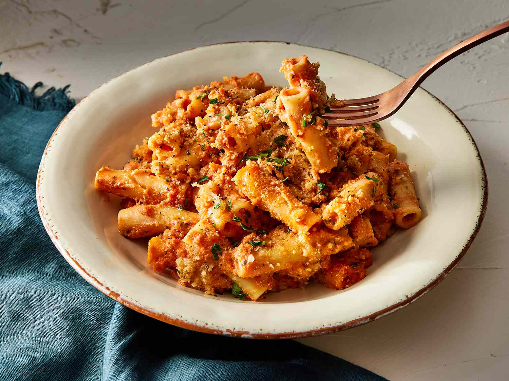

Five Cheese Ziti al Forno

Description
Five cheese ziti al forno is a delicious pasta bake made with ready-made marinara and alfredo sauces, Italian cheese blend, ricotta, ziti, and topped with panko bread crumbs and Parmesan.
Ingredients
- 1 pound dry ziti pasta
- 1 (8-ounce) package shredded Italian blend cheeses
- 2 (24-ounce) jars marinara sauce
- 1 (15-ounce) jar Alfredo sauce
- 1 cup ricotta cheese
- 1/4 cup Italian seasoned panko bread crumbs
- 1/2 cup freshly grated Parmesan cheese
- 2 tablespoons unsalted butter, melted
- 2 cloves garlic, minced
Directions
- Gather all ingredients. Preheat the oven to 375 degrees F (190 degrees C). Grease a 9x13-inch baking dish.
- Cook the pasta 1 minute less than directed on the package. Drain pasta and transfer to a large bowl.
- Set aside 1/2 cup of the Italian blend cheeses.
- Add marinara sauce, Alfredo sauce, remaining Italian blend cheeses, and ricotta cheese to the pasta; toss to combine.
- Transfer pasta mixture to the prepared dish. Top with reserved 1/2 cup cheese.
- For the topping, in a small bowl, combine panko, Parmesan, melted butter, and garlic. Sprinkle over the pasta mixture in the baking dish.
- Bake until golden brown and bubbly, 30 minutes. Let stand 10 minutes before serving.